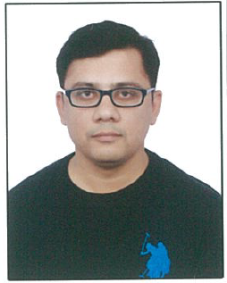

|

|
Contact
Email: prafull202@gmail.com
Phone: (+91)9993031220
Website: Linkedin Profile
|
Prafull Pramod Dhoke
Asset Performance Management|Reliability|Analytics|IIOT
A Mechanical Engineer, graduated from Raipur university Chhattisgarh, India. Working as Senior Staff Software Engineer in GE Digital. Responsible for developing digital products in APM field and help in digital transformation of plant processes. Experience in O&M of Power plants, Maintenance of rotary equipment, Well versed with RCM concept, I am certified Reliability Engineer and Boiler Operations Engineer. Familiar with Maintenance planning, scheduling, project planning and scheduling. Capable of working in Agile environment.
Skills
| Mechanical Maintenance |
⭐⭐⭐⭐⭐ |
| Maintenance Planning |
⭐⭐⭐⭐⭐ |
| Reliability |
⭐⭐⭐⭐⭐ |
|
| Meridium |
⭐⭐⭐⭐⭐ |
| SQL |
⭐⭐⭐⭐⭐ |
| Python |
⭐⭐⭐ |
|
Experience
GE Digital (12/2018 to Present)
Working as Senior Staff Software Engineer- in APM Engineering team, current area of exposure:
- Creating Scalable and Reusable Digital products for both Cloud and Edge environment on APM Platform (Meridium)
- Developed Libraries of Asset strategies, FMEAs of rotating, stationary plant assets.
- Explaining the value story of the product developed to Product Management team, Sales team, solution architects, Marketing team and to customers as well.
GE Power (01/2017 to 12/2018)
Worked as Lead engineer- Life Cycle Reliability, Key responsibilities includes:
- Reliability, Availability and Maintainability assessment of thermal power plants, defining baseline and estimate potential improvements through hardware upgrades or digital solutions.
- Dynamic reliability assessment to calculate projected criticality ranking of different assets over a period for strategic maintenance planning.
- Design For Reliability Assessment for NPI Products.
- Support commercial/sales team by providing projection of reliability and availability numbers for risk assessment of commercial offerings.
- Development of unplanned outage models for different steam turbine fleet based on fleet data for estimating unplanned outage risk and unplanned outage cost using Reliasoft synthesis software.
- Developing weibull distribution in Reliasoft synthesis software for evaluating mean time between failure and mean time to repair.
- Assessment of steam turbine for major/minor outage interval extension and provide advisories to client based on assessment
Power Industry: Vedanta/KSK (09/2006 to 01/2017)
Worked for over a decade in different roles in Power Industry. Key exposure area:
- Exposure of overhauling of HIP and LP turbine during annual overhaul which includes bearing inspection, steam flow path adjustment, gland seal correction, alignment, servicing of high-pressure valves etc.
- Exposure of minor and major overhaul of rotary equipments like single stage and multistage centrifugal pumps including Boiler feed pump, condensate extraction pump etc.
- Exposure of Formulation of Scope of work of various types of maintenance service contracts and its further administration.
- Exposure of spare planning for regular and overhaul maintenance considering optimum inventory level.
- Exposure of budget preparation on monthly and annual basis and its subsequent tracking.
- Developed SMPs/ PM task list/ CBM Schedule for Plant assets.
- Condition based maintenance by vibration monitoring and oil quality analysis to avoid breakdown of equipment
- Member of Trip analysis/ Root cause Analysis team.
Academic Qualifications
| Degree/Certificate |
Year |
Percentage |
| B.E. Mechanical from Pt. Ravishankar Shukla University, Raipur (C.G.) |
2006 |
75.6% (Honors) |
| HSSC, CG Board, Rajnandgaon (C.G.) |
2002 |
80% |
| HSC, M.P. Board, Rajnandgaon (C.G.) |
2000 |
76.6% |